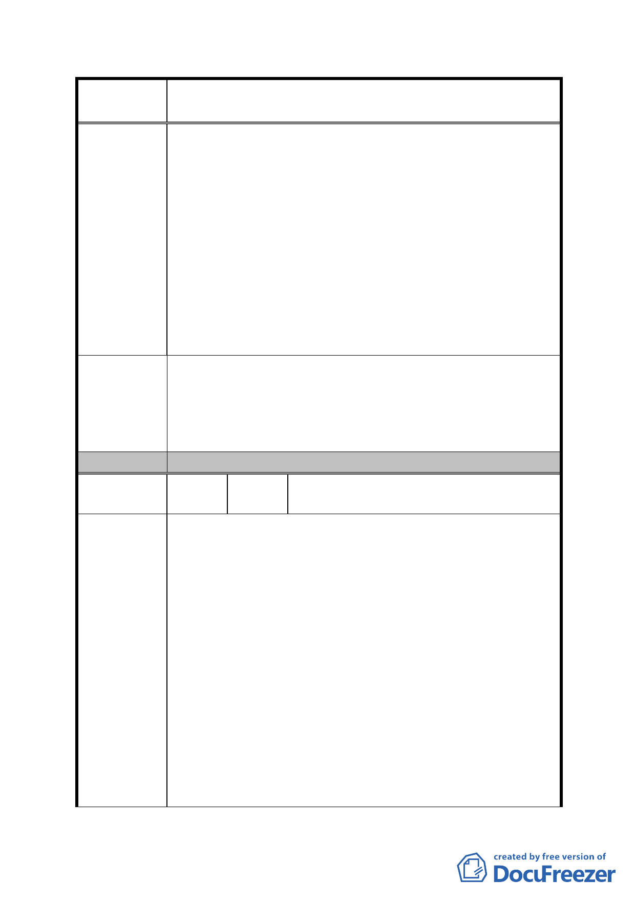

案
名
修訂臺北市「基隆河（中山橋至成美橋段）附近地區土地使
用分區與都市設計管制要點」（北段地區）計畫案
住宅使用限制，卻又增加下列不合理限制 :
A-取消住宅開放空間獎勵，使開放空間獎勵面積減少約6
倍。
B-作住宅使用時須提供具有公園、綠地或廣場性質之公共
設施，且不得納入有效面積。
C-開放空間形式須為廣場式，不得為內庭式廣場。
D-非作住宅使用之建築物內部設施或設備（如梯廳、廁
所、茶水間等）應集中留設。
E-比照84年9月27日規定回饋代金。
上述規定依內政部87.10.14台內營字第8708034號函釋
及台北市政府法規會見解，皆違反「台北市土地使用分
區管制規則」。
對於大彎北段商業區及娛樂區土地，從高強度之商業區及娛
樂區，委屈作為住宅區，應是全面的、無條件的開放，根據
建 議 辦 法 台北市分區使用管制規則規定，第三種商業區本來就可以作
住宅使用，所以回歸台北市分區使用管制規則規定，才是符
合市民期待。
委 員 會 決 議 同編號 1。
編
號
10
陳情人
李得榮：金泰段 122 地號等 42 筆土地代
表人（商業區、娛樂區土地）
一、修訂計畫內容對照表編號八：
建議理由：
1、商業區、娛樂區申請開發作住宅使用時，須於建築基
地內提供具有公園、綠地或廣場性質之公共設施，且
是項公共設施面積不得納入「綜合設計放寬規定」之
「有效面積」計算，實無另行規範最小建蔽率之必要。
2、若規範最小建蔽率，於引用綜合設計放寬獎勵之規定
陳情理由
時，將影響建築設計彈性與開放空間品質。
二、修訂計畫內容對照表編號十：
建議理由：
1、以街廓編號Ａ2、Ｂ2 為例，其建築開發至少需整合四、
五十位分別共有地主，如本項獎勵取消將直接導致地
主因整合誘因消失致開發意願低落。
2、獎勵取消整合誘因消失，分別共有地主欲藉地籍分割
自行作小基地開發使用機率將大增，勢必影響原都市
- 62 -